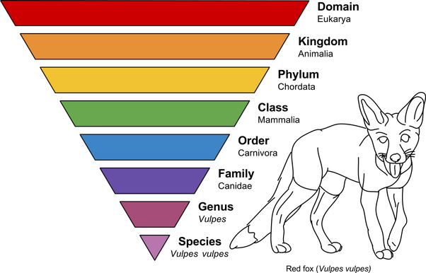

The Hierarchy of Taxonomy
Taxonomy is used to group organisms together based off of traits like size, shape, and color. Each tier of classification represents one more group of distinctions made about the organism in question. The tiers are: Domain, Kingdom, Phylum, Class, Order, Family, Genus, and Species, with Domain containing the most organisms and Species containing the least.
|

Courtesy of Welcome Wildlife (https://www.welcomewildlife.com/)
|
Species describes only one type of organism, like a red fox or a human. Smaller groups are exclusive to the groups that contain them. For example, a red fox described as the species vulpes will always fall under Kingdom Animalia.
Binomial Nomenclature
Binomial nomenclature means, simply put, that an organism is referred to using a combination two names: its genus name and its species name. This means that only one type of organism will have a given name. Furthermore, this name will be the same all over the world, as these names are standard.
For example, a human is in the genus homo, meaning "same" and containing humans and our evolutionary ancestors, and the species sapiens, meaning "smart man." A human's scientific name, following the rules of binomial nomenclature, is Homo sapiens.